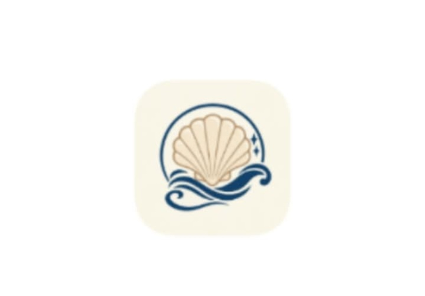

01 / MOBILE APPShellScan
FEATUREDA mobile app concept for seashell species identification and edibility classification using image recognition. It also includes species information, quizzes, and shellfish advisory information.
Mobile app only · Project preview